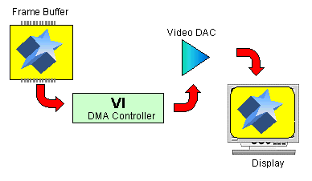
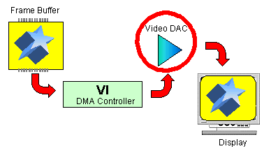

The RCP receives the necessary drawing parameters from the CPU in the form of the display list. Then it executes the display list as shown here:
Basically, the RCP executes the display list to perform the necessary coordinate conversions and drawing calculations by pipelining the work through its three internal components -- the RSP (Reality Signal Processor), the RDP (Reality Display Processor), and the VI (Video Interface).
The RSP completes these steps:
The following subprocesses are performed as part of the calculations and conversions done in the second step:
The RDP manipulates the data that the RSP converted to form the actual display data. Then it writes the display data to the frame buffer in RDRAM. The RDP performs the following subprocesses as part of its manipulation process:
The VI process sends the data currently residing in the frame buffer to the video DAC as shown here:

The video DAC is a piece of hardware that actually outputs the displayable video signal on the TV monitor by converting the digital data transferred from the VI into analog data that can be viewed on the screen.

Nintendo® Confidential
Copyright © 1999
Nintendo of America Inc. All Rights Reserved
Nintendo and N64 are registered trademarks of Nintendo
Last Updated March, 1999